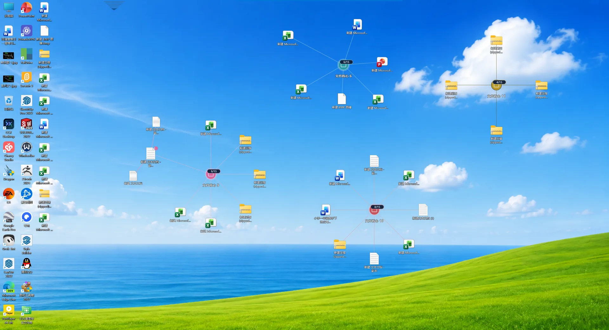

Free for Windows
Icons keep moving. Hard to find?
New files arrive every day, and positions shift with them — so you can't find what you need at a glance.
Gravity Desktop gives your desktop a centre of gravity. Related files gather around a core like satellites — and once pinned, they stay exactly where you put them.
Click the buttons inside the demo to watch files fly in and lock to the core — then reset to scatter them again.
Gravity
Files held by a core never drift back.
Related files are pulled in and held around a core, joined to it by thin lines. The core is the anchor — so what you remember is where a thing lives, not what it's called.
- Visual core · anchor
- Files · joined to the core

Neat is not the same as findable.
Most organizers drop icons into boxes and fences. The desktop looks cleaner, but positions still change. A new file arrives, the layout shifts, and you're back to scanning names.
When positions don't hold, memory never forms. Gravity Desktop doesn't tidy your files — it fixes where they sit. Nothing on disk is moved or changed; only the desktop's arrangement.
What it actually does
-
Visual cores
Group apps and files around one clear centre. Each core becomes a landmark on your desktop, so related things sit together instead of scattering.
-
Free position, then pin
Drag items to wherever feels natural. When it's right, pin the layout. Positions stop drifting, and spatial memory starts working for you.
-
Never moves your files
Only how things appear on the desktop changes. Nothing on disk is moved, copied or reorganised. Your folder structure and paths stay exactly as they are.
-
Collapsible cores
Expand a core when you need the full group, collapse it when you want less noise. Every position is kept, ready when you come back.
Compared with Fences-style organizers
Fencing tools solve "the desktop looks messy". Gravity Desktop solves "I can't remember where things are". One collects icons into boxes; the other gives your desktop a centre of gravity — you decide where things sit, then pin it.
| Dimension | Gravity Desktop | Fences-style organizers |
|---|---|---|
| What it's for | Gravity Desktop Make positions hold, so spatial memory can form | Fences-style organizers Make the desktop look tidier |
| Unit of grouping | Gravity Desktop One visual core, with related files gathered around it | Fences-style organizers A set of translucent boxes or fences |
| Who sets the position | Gravity Desktop You drag it where it feels right, then pin it | Fences-style organizers Determined by the box bounds and its ordering rules |
| When a new file arrives | Gravity Desktop It won't push around anything you've already pinned | Fences-style organizers Items usually re-flow inside the box |
| Real files on disk | Gravity Desktop Not moved, copied or changed | Fences-style organizers Also not moved |
Neither tool moves anything on disk — the difference is only in how the desktop is organised.
Who it's for
For anyone tired of re-finding the same icons every day. If you remember things by where they sit on screen — not just what they're called — this will feel natural.
If you only want one-click auto-sorting into rigid boxes and never care whether positions hold, a traditional fencing tool may suit you better.
Available in your language
The Gravity Desktop interface is localised in six languages and follows your system language after install.
- Englishen
- 中文zh
- 日本語ja
- Deutschde
- Françaisfr
- Españoles
Language list as published on the Microsoft Store listing. This website itself is available in English and Simplified Chinese.
Frequently asked questions
Does it move or change my real files?
No. It only changes how things appear on the desktop. Your files, folder structure and paths on disk all stay exactly as they are — nothing is moved, copied or reorganised.
How is it different from Fences-style organizers?
Fencing tools collect icons into boxes so the desktop looks tidier. Gravity Desktop keeps positions stable instead: files gather around a visual core, you drag them where it feels right, then pin the layout so a new file can't push them around.
Is it free? Do I need an account?
It's completely free and installs from the Microsoft Store. No account or sign-up is required.
Which Windows versions are supported?
Windows 10 and Windows 11.
Which languages is the interface available in?
Six: English, Simplified Chinese, Japanese, German, French and Spanish. It follows your system language after install.
Why doesn't it sort my desktop automatically?
Because automatic sorting makes the decision for you — and positions keep changing anyway. Gravity Desktop leaves that decision to you: drag items where you want them, pin the layout, and they stay there.
Let your desktop stay where you put it.
Free on the Microsoft Store. No account required.
Download Gravity Desktop